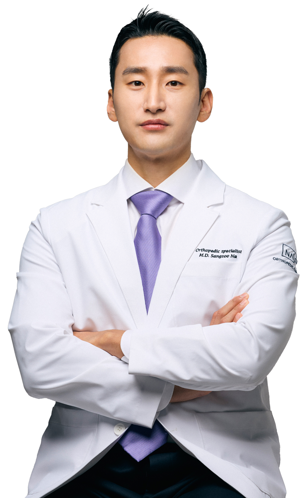

대표원장 소개

맞춤형 치료를 통해 통증없는 일상으로 복귀하실 수 있도록 도와드리겠습니다.
나 상 수
정형외과 전문의
대표원장
대표원장
- 계명대학교 의과대학 의학과 졸업
- 계명대학교 의과대학 의학과 석사
- 계명대학교 대구동산병원 과장
- 분당서울대학교 병원 척추 전임의
- 전)성모윌병원 정형외과 원장
- 전)감일연정형외과 원장
- 서울대학교 병원 임상자문의
- 대한 정형외과학회 정회원
- 대한 척추외과학회 인증 전문의
- 대한 척추외과학회 정회원
- 대한 슬관절학회 정회원
- 대한 견주관절학회 정회원
- 대한 스포츠의학회 인증전문의
- 미국 정형외과 학회 국제 회원 (AAOS international member)
대한 정형통증의학회 TPI 이수
FIFA Diploma in Football Medicine Course 이수
AO Trauma course 이수
Medtronic Spine University 이수
Arthrex Arthroscopic workshop 이수